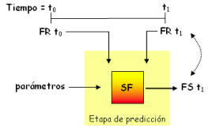

2006
Improving forest-fire prediction by applying a statistical approach.
Germán Bianchini, Mónica Denham, Ana Cortés, Tomás Margalef, Emilio Luque. Forest
Ecology and Management. Volumen 234 número, p210. ISSN: 0378-1127. ELSEVIER Science. 2006. También
publicado en: V International Conference on Forest Fire Research. ADAI - Associacao para o
Desenvolvimento da Aerodinamica Industrial CEIF - Centro de Estudos sobre Incendios Florestais.
Portugal. Coimbra. 2006.
2007
Tesina (equivalente al título de Master): Prediccióon de Incendios Forestales Basada en Algoritmos Evolutivos Guiados por
los Datos
Mónica Denham. Directores: Ana Cortés, Tomás Margalef.Trabajo para la obtención de la
Suficiencia Investigadora en la Universidad Autónoma de Barcelona en Ciencias de la Computación.
2007.
